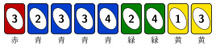

下の 9 枚の手札を 1 枚ずつ場に出していく。最初の 1 枚は何でもよいが、2 枚目からは直前に出したカードと色か数字が同じカードしか出せない。手札を全部出し切る順番は何通りあるか。
Play the nine cards below one at a time. The first card can be any card; after that, each card must match the previous one in color or number. In how many orders can you play the whole hand?

28 通り
2 枚の青 3 を区別すると、入れかえの分が 2 倍になって 56 通りです。
28 orders (56 if the two blue 3s are told apart).
カードを点、続けて出せる 2 枚を線で結ぶと、「全部出し切る」は「すべての点を 1 回ずつ通る道（ハミルトン路）」になります。点が増えると探すのも数えるのも一気に難しくなる、有名な難問です。この手札は、カードのつながり方に目をつけると手で数えられます。
1. 黄 1 は端。黄 1 とつながるのは黄 3 だけ（ほかに 1 も黄色もない）。だから黄 1 は最初か最後で、その隣は黄 3。黄 1 から始まる順番を数えて 2 倍すればよい。
2. 緑 2 と緑 4 は必ず隣どうし。緑 2 は緑 4 と青 2、緑 4 は緑 2 と青 4 としかつながらない。
3. 赤 3 は 3 としかつながらない。黄 3 のすぐ次に出すか、青 3 の隣に置くしかない。
黄 1・黄 3 のあと、3 枚目が赤 3 か青 3 かで分けます。
3 枚目が赤 3：8 通り
3 枚目が青 3：6 通り（赤 3 は 2 枚の青 3 の間か、いちばん最後）
（8 + 6）× 2 = 28
× 2 は、それぞれを逆から出す順番（黄 1 で終わる）の分です。